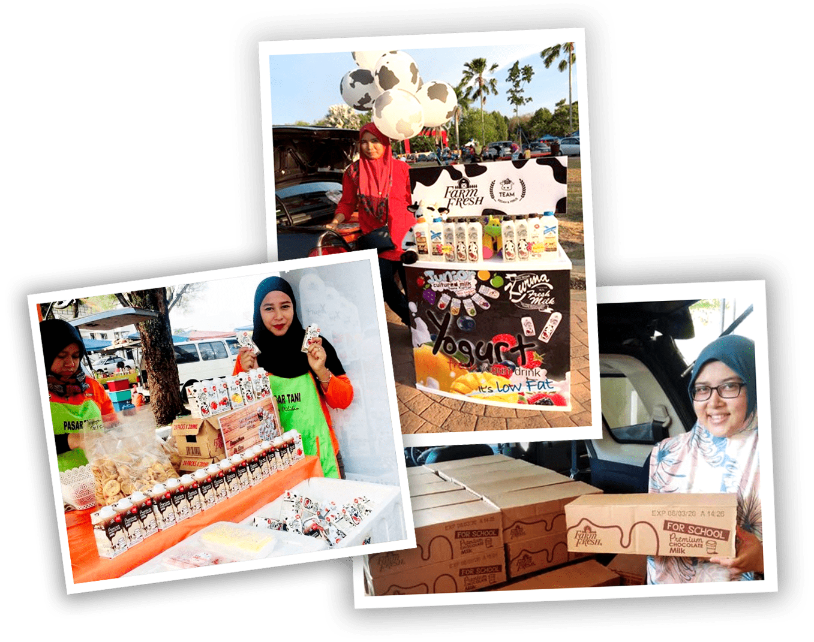
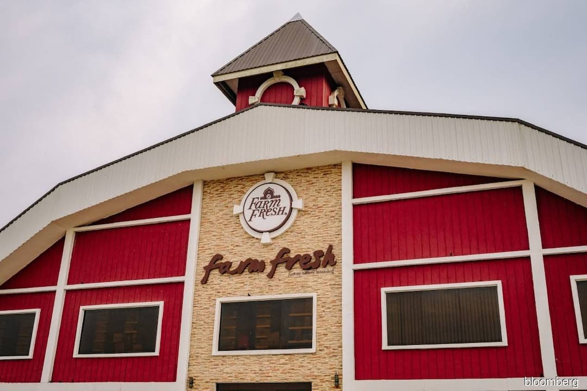
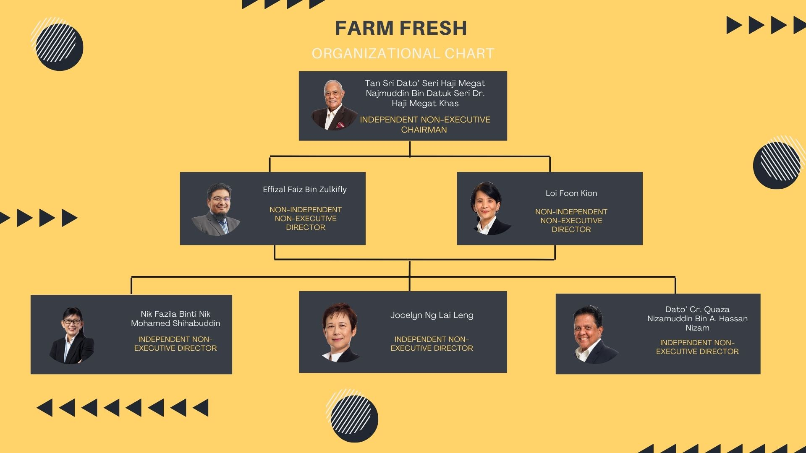

WHAT IS FARM FRESH ?
Farm Fresh Berhad (formerly known as The Holstein Milk Company Sdn. Bhd.) is a Malaysian dairy product company. Farm Fresh operates two factories located in Bandar Muadzam Shah, Pahang, and Larkin, Johor, with a production capacity reaching 12 million liters annually, averaging one million liters per month. It was established in 2009, founded by Loi Tuan Eee, and is 30% owned by Khazanah Nasional Berhad, the investment arm of the Malaysian government.

H I S T O R Y

Farm Fresh is a Malaysian dairy company founded in 2008 by Loi Tuan Ee. It started with a vision to provide fresh, natural milk without preservatives or artificial ingredients. The company operates its own farms, ensuring a farm-to-table concept. Its flagship products include fresh milk, yogurt drinks, and plant-based alternatives. Farm Fresh quickly gained popularity for its high-quality and locally sourced products, becoming a leading brand in the Malaysian dairy industry.
O W N E R
Loi Tuan Ee, a co-founder of our Group, has a diverse background across multiple industries. He began his career at Ayer Hitam Oil Mill before moving on to Kartika Machinery. Later, he co-founded Rainforest Capital and The Holstein Milk Company, which is now known as Farm Fresh. As the Group's Managing Director, he is responsible for business development, strategic corporate planning, and overseeing operations.
B O A R D
OF DIRECTORS
